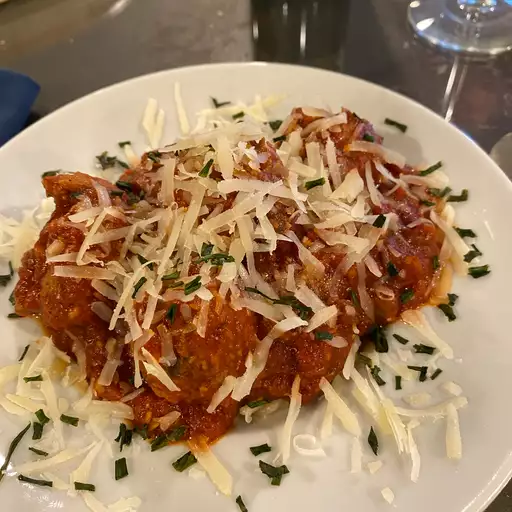

Spaghetti and Meatballs

Description
Spaghetti and meatballs is a beloved Italian-American classic that has found its way into the hearts and plates of people around the world. This iconic dish features perfectly cooked al dente spaghetti noodles, delicately coated in a rich and savory tomato-based marinara sauce. But the star of the show is undoubtedly the meatballs – tender, seasoned spheres of ground meat, typically a blend of beef and pork, mixed with breadcrumbs, herbs, and spices. These meatballs are lovingly shaped and then simmered in the tomato sauce until they soak up all the delicious flavors. The combination of the tender pasta, tangy tomato sauce, and succulent meatballs creates a harmonious and comforting symphony of flavors and textures that's both hearty and satisfying.
What makes spaghetti and meatballs even more delightful is the opportunity for customization. You can opt for larger or smaller meatballs, experiment with different types of pasta, or even make vegetarian versions using plant-based meat alternatives. Whether served as a weeknight family dinner or the centerpiece of a special celebration, this classic Italian-American dish is a timeless favorite that never fails to bring warmth and comfort to the table. It's a culinary masterpiece that embodies the essence of Italian cuisine while also showcasing the adaptability and creativity that make food so universally cherished.
Ingredients
For the Meatballs:
- 1 pound ground beef
- 1/2 cup breadcrumbs
- 1/2 cup grated Parmesan cheese
- 1 large egg
- 1/4 cup finely chopped onion
- 2 cloves garlic, minced
- 2 tablespoons fresh parsley, chopped
- Salt and black pepper to taste
- 2 tablespoons olive oil
For the Tomato Sauce:
- 1 can (28 ounces) crushed tomatoes or tomato sauce
- 1/4 cup finely chopped onion
- 2 cloves garlic, minced
- 2 tablespoons olive oil
- 1 teaspoon sugar (optional)
- Salt and black pepper to taste
- Red pepper flakes (optional, for added heat)
For the Spaghetti:
- 8 ounces spaghetti noodles
- Salt for pasta water
Steps
- Prepare the Meatballs: In a large mixing bowl, combine the ground beef, breadcrumbs, grated Parmesan cheese, egg, finely chopped onion, minced garlic, chopped parsley, salt, and black pepper. Mix until all the ingredients are well incorporated.
- Form the Meatballs: Take a portion of the meat mixture and roll it between your hands to form meatballs about 1 to 1.5 inches in diameter. Repeat until all the mixture is used, typically yielding around 12 meatballs.
- Cook the Meatballs: In a large skillet, heat 2 tablespoons of olive oil over medium-high heat. Add the meatballs and cook, turning occasionally, until they are browned on all sides and cooked through, about 10-12 minutes. Remove the meatballs from the skillet and set them aside.
- Prepare the Tomato Sauce: In the same skillet, add another 2 tablespoons of olive oil if needed. Add the finely chopped onion and minced garlic. Sauté until the onion becomes translucent, about 3-4 minutes.
- Simmer the Tomato Sauce: Pour in the crushed tomatoes or tomato sauce into the skillet with the sautéed onions and garlic. Add sugar (if using), salt, black pepper, and red pepper flakes (if you want some heat). Stir well to combine. Let the sauce simmer for about 15-20 minutes, allowing the flavors to meld together. Taste and adjust the seasoning as needed.
- Cook the Spaghetti: In a large pot, bring water to a boil, add a generous pinch of salt, and cook the spaghetti noodles according to the package instructions until al dente. Drain and set aside.
- Combine and Serve: Gently place the cooked meatballs into the simmering tomato sauce and let them warm through for a few minutes.
- Serve: Serve the spaghetti topped with the meatballs and tomato sauce. Garnish with fresh basil leaves and extra grated Parmesan cheese if desired. Enjoy your homemade spaghetti and meatballs!